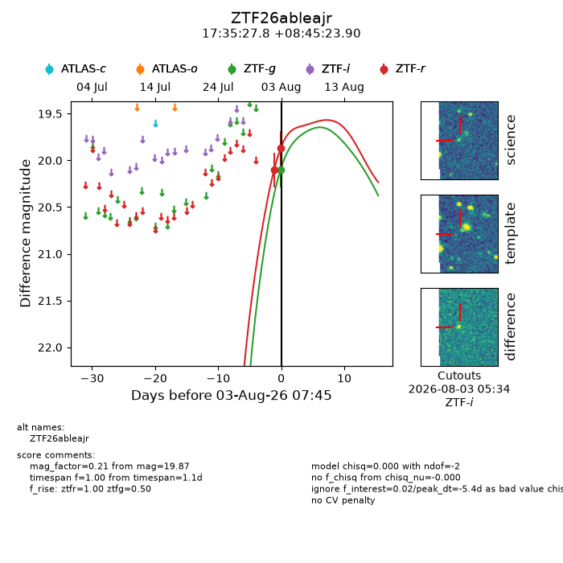
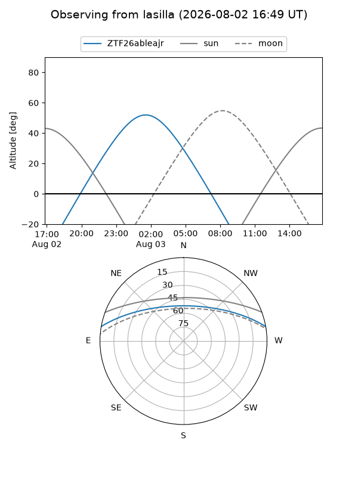
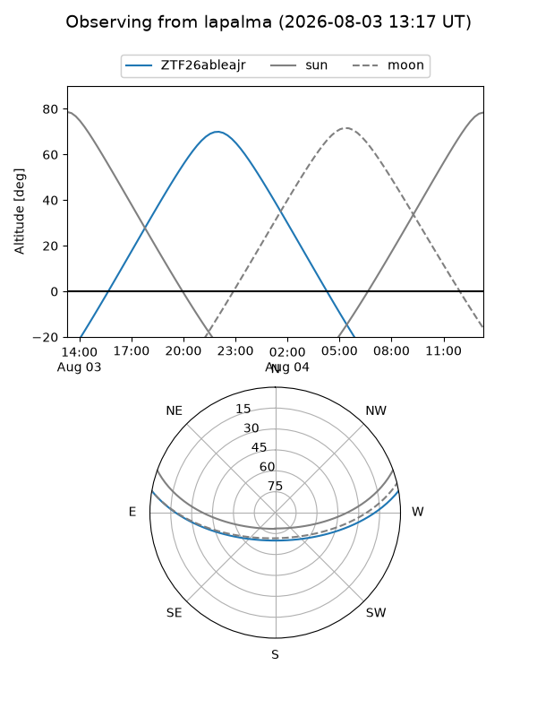
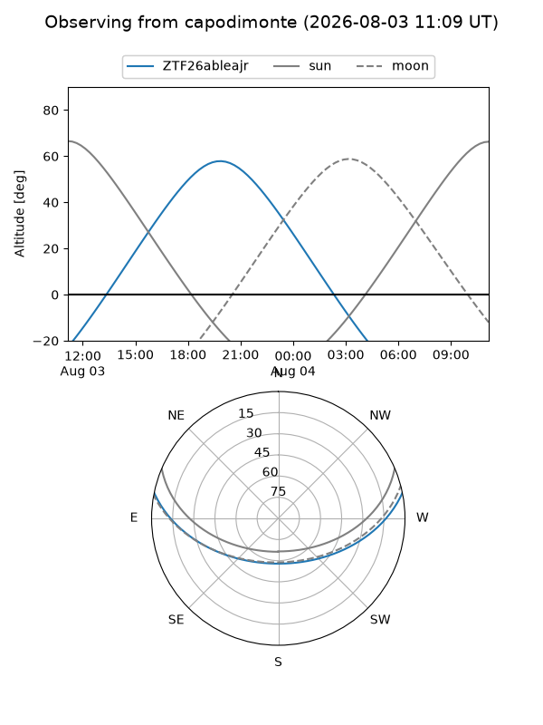
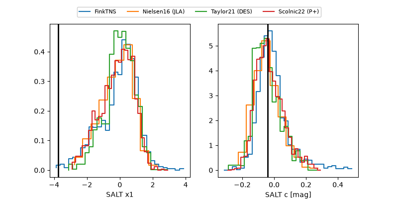

ZTF26ableajr
Target ZTF26ableajr at 2026-08-03 07:47
Aliases and brokers:
FINK-ZTF: ztf.fink-portal.org/ZTF26ableajr
Lasair-ZTF: lasair-ztf.lsst.ac.uk/objects/ZTF26ableajr
ALeRCE-ZTF: alerce.online/object/ZTF26ableajr
Direct TNS query: direct search
alt names
ZTF26ableajr (ztf,fink_ztf)
Coordinates:
equatorial (ra, dec) = 263.8659,+8.75664
equatorial (HMS+DMS) = 17:35:27.81,+08:45:23.90
galactic (l, b) = (32.2461,+20.83634)
Flags:
peak dt: -5.4
Photometry:
last ztfg=20.10, ztfr=19.87
1 ztfg, 2 ztfr detections
Lightcurve

Visibility



Additional plots
